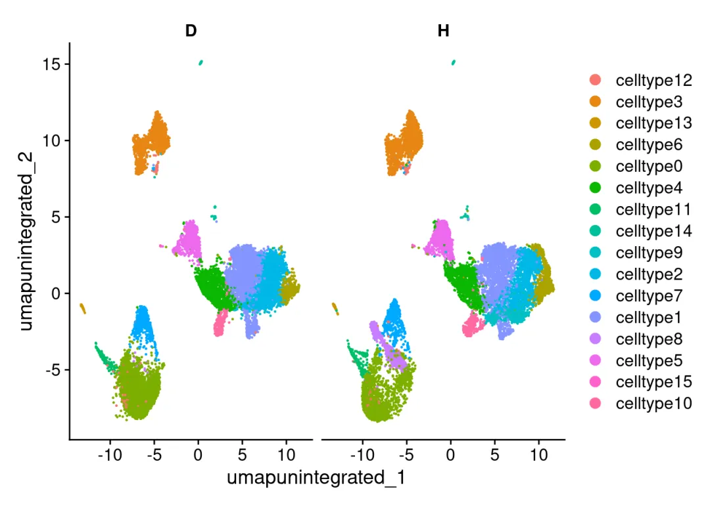
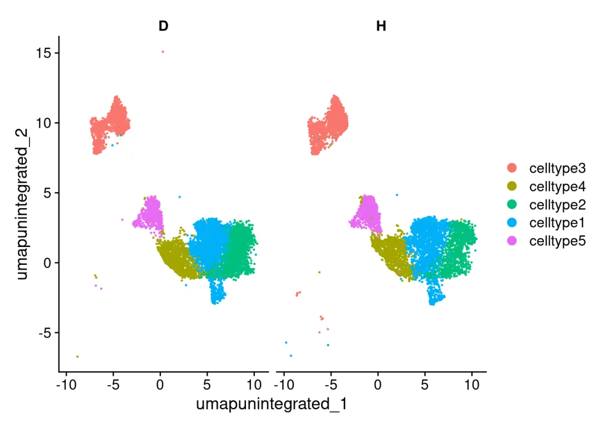
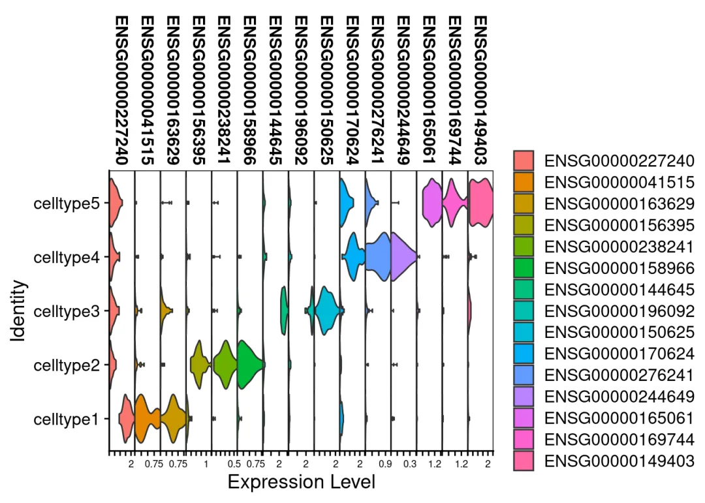
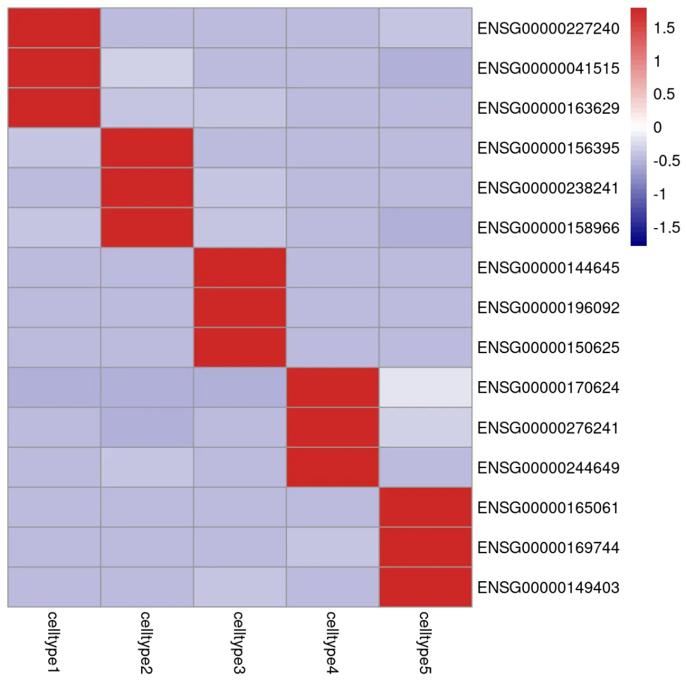
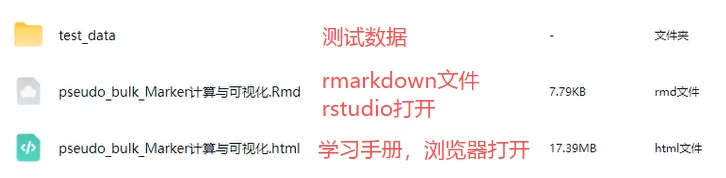

单细胞Marker计算与可视化的pseudo-bulk方案
原文：https://mp.weixin.qq.com/s?__biz=MzAwMzIzOTk5OQ==&mid=2247535727&idx=1&sn=5a8dc6600a13455bcea612ac1cbe0173&chksm=9b3c353fac4bbc29f4e2aa8127106325f20f589e0fc3a6a003fcc462a3b03832fad9803c301c#rd 合集：单细胞教程全收录
一、写在前面
pseudo-bulk：把同一个细胞类型/同一群细胞的多个单细胞表达量直接相加/求和，合成一个 “虚拟的bulk样本”。也许你会有疑惑，我们花这么多钱测得单细胞，不就是为了获得单细胞分辨率的转录组数据吗？为何还要将其再合并模拟生成bulk数据？
这其实为了解决单细胞稀疏性的问题，pseudo-bulk对scRNA-seq数据求和后，信号变强、噪声被平均掉。并且在scRNA-seq进行差异分析时，细胞之间不是独立样本，所以会干扰差异分析的准确度，从而产生假阳性。故差异基因更可靠、更接近真实生物学。
此前我们演示过pseudo bulk差异分析，接下来只需要转换一下变量，即可基于scRNA‑seq数据实现不同细胞类型间的pseudo bulk标记基因计算。
本教程基于Linux环境的rstudio演示，计算资源不足的同学可参考：
访问链接：https://biomamba.xiyoucloud.net/欢迎联系客服微信[Biomamba_zhushou]获取帮助 如果需要单细胞数据分析教学、生信热点全文复现、自测数据个性化分析辅导、常态化实验学习，欢迎联系客服微信[Biomamba_zhushou]。
二、实操流程
1、数据基本情况
# 加载R包library(Seurat)
## Loading required package: SeuratObject
## Loading required package: sp
## 'SeuratObject' was built with package 'Matrix' 1.7.1 but the current
## version is 1.7.2; it is recomended that you reinstall 'SeuratObject' as
## the ABI for 'Matrix' may have changed
##
## Attaching package: 'SeuratObject'
## The following objects are masked from 'package:base':
##
## intersect, t
library (dplyr)
##
## Attaching package: 'dplyr'
## The following objects are masked from 'package:stats':
##
## filter, lag
## The following objects are masked from 'package:base':
##
## intersect, setdiff, setequal, union
# 读取数据：scRNA <- readRDS('test_data/T1D_scRNA.rds')# 这个数据包含24个样本：levels(scRNA$sample)
## NULL
# 包含两个组别的数据：DimPlot(scRNA,split.by = 'Group')

# 取五种细胞类型用于下游演示：select_ct <- paste0('celltype',1:5)scRNA <- scRNA[,scRNA$cell_type %in% select_ct]DimPlot(scRNA,split.by = 'Group')

2、循环添加细胞类型专属变量
for (run_ct in select_ct) { target_col <- paste0(run_ct,'_var')# 细胞类型专属变量的slot名称 scRNA@meta.data[,target_col] <- scRNA$cell_type# 复制原始细胞变量 scRNA@meta.data[[target_col]][scRNA@meta.data[[target_col]] %>% as.character() != run_ct] <- 'OtherS' # 除了目标细胞类型外，其它的都叫OtherS}
3、循环生成pseudo-bulk数据并差异计算
3.1 生成拟bulk对象
bulk <- AggregateExpression(scRNA, return.seurat = T, slot = "counts", assays = "RNA", group.by = c("cell_type", "sample", "Group",paste0(select_ct,'_var'))# 分别填写细胞类型、样本变量、分组变量的slot名称 )
## Names of identity class contain underscores ('_'), replacing with dashes ('-')
## Centering and scaling data matrix
##
## This message is displayed once every 8 hours.
# 生成的是一个新的Seurat对象：bulk
## An object of class Seurat
## 41056 features across 120 samples within 1 assay
## Active assay: RNA (41056 features, 0 variable features)
## 3 layers present: counts, data, scale.data
3.2 pseudo-bulk计算细胞marker
# 差异分析会用到bulk分析常用到的DESeq2：if(!require(DESeq2))BiocManager::install('DESeq2')
## Loading required package: DESeq2
## Loading required package: S4Vectors
## Loading required package: stats4
## Loading required package: BiocGenerics
##
## Attaching package: 'BiocGenerics'
## The following objects are masked from 'package:dplyr':
##
## combine, intersect, setdiff, union
## The following object is masked from 'package:SeuratObject':
##
## intersect
## The following objects are masked from 'package:stats':
##
## IQR, mad, sd, var, xtabs
## The following objects are masked from 'package:base':
##
## anyDuplicated, aperm, append, as.data.frame, basename, cbind,
## colnames, dirname, do.call, duplicated, eval, evalq, Filter, Find,
## get, grep, grepl, intersect, is.unsorted, lapply, Map, mapply,
## match, mget, order, paste, pmax, pmax.int, pmin, pmin.int,
## Position, rank, rbind, Reduce, rownames, sapply, saveRDS, setdiff,
## table, tapply, union, unique, unsplit, which.max, which.min
##
## Attaching package: 'S4Vectors'
## The following objects are masked from 'package:dplyr':
##
## first, rename
## The following object is masked from 'package:utils':
##
## findMatches
## The following objects are masked from 'package:base':
##
## expand.grid, I, unname
## Loading required package: IRanges
##
## Attaching package: 'IRanges'
## The following objects are masked from 'package:dplyr':
##
## collapse, desc, slice
## The following object is masked from 'package:sp':
##
## %over%
## Loading required package: GenomicRanges
## Loading required package: GenomeInfoDb
## Loading required package: SummarizedExperiment
## Loading required package: MatrixGenerics
## Loading required package: matrixStats
##
## Attaching package: 'matrixStats'
## The following object is masked from 'package:dplyr':
##
## count
##
## Attaching package: 'MatrixGenerics'
## The following objects are masked from 'package:matrixStats':
##
## colAlls, colAnyNAs, colAnys, colAvgsPerRowSet, colCollapse,
## colCounts, colCummaxs, colCummins, colCumprods, colCumsums,
## colDiffs, colIQRDiffs, colIQRs, colLogSumExps, colMadDiffs,
## colMads, colMaxs, colMeans2, colMedians, colMins, colOrderStats,
## colProds, colQuantiles, colRanges, colRanks, colSdDiffs, colSds,
## colSums2, colTabulates, colVarDiffs, colVars, colWeightedMads,
## colWeightedMeans, colWeightedMedians, colWeightedSds,
## colWeightedVars, rowAlls, rowAnyNAs, rowAnys, rowAvgsPerColSet,
## rowCollapse, rowCounts, rowCummaxs, rowCummins, rowCumprods,
## rowCumsums, rowDiffs, rowIQRDiffs, rowIQRs, rowLogSumExps,
## rowMadDiffs, rowMads, rowMaxs, rowMeans2, rowMedians, rowMins,
## rowOrderStats, rowProds, rowQuantiles, rowRanges, rowRanks,
## rowSdDiffs, rowSds, rowSums2, rowTabulates, rowVarDiffs, rowVars,
## rowWeightedMads, rowWeightedMeans, rowWeightedMedians,
## rowWeightedSds, rowWeightedVars
## Loading required package: Biobase
## Welcome to Bioconductor
##
## Vignettes contain introductory material; view with
## 'browseVignettes()'. To cite Bioconductor, see
## 'citation("Biobase")', and for packages 'citation("pkgname")'.
##
## Attaching package: 'Biobase'
## The following object is masked from 'package:MatrixGenerics':
##
## rowMedians
## The following objects are masked from 'package:matrixStats':
##
## anyMissing, rowMedians
##
## Attaching package: 'SummarizedExperiment'
## The following object is masked from 'package:Seurat':
##
## Assays
## The following object is masked from 'package:SeuratObject':
##
## Assays
# 创建空的数据框mk_df <- data.frame()for (run_ct in select_ct) { # 改变默认分类变量： Idents(bulk) <- paste0(run_ct,'_var') # 下面的计算依赖DESeq2，做过Bulk RNA-Seq的同学都知道：bulk_deg <- FindMarkers(bulk, ident.1 = run_ct, ident.2 = "OtherS", # 这样算出来的Fold Change就是run_ct/OtherS slot = "counts", test.use = "DESeq2",# 这里可以选择其它算法 verbose = F# 关闭进度提示 )bulk_deg$Celltype <- run_ct# 添加一列，收录当前进行差异计算的细胞类型bulk_deg$gene <- rownames(bulk_deg)# 添加基因列 mk_df <- rbind(mk_df,bulk_deg)# 纵向合并数据框}
## converting counts to integer mode
## gene-wise dispersion estimates
## mean-dispersion relationship
## final dispersion estimates
## converting counts to integer mode
## gene-wise dispersion estimates
## mean-dispersion relationship
## final dispersion estimates
## converting counts to integer mode
## gene-wise dispersion estimates
## mean-dispersion relationship
## final dispersion estimates
## converting counts to integer mode
## gene-wise dispersion estimates
## mean-dispersion relationship
## final dispersion estimates
## converting counts to integer mode
## gene-wise dispersion estimates
## mean-dispersion relationship
## final dispersion estimates
# 计算top markertop3_mk <- mk_df %>% group_by(Celltype) %>% top_n(n = 3, wt = avg_log2FC) top3_mk
## # A tibble: 15 × 7
## # Groups: Celltype [5]
## p_val avg_log2FC pct.1 pct.2 p_val_adj Celltype gene
## <dbl> <dbl> <dbl> <dbl> <dbl> <chr> <chr>
## 1 6.52e- 37 3.45 1 0.823 2.68e- 32 celltype1 ENSG00000227240
## 2 3.00e- 20 3.89 0.958 0.25 1.23e- 15 celltype1 ENSG00000041515
## 3 3.25e- 14 3.87 0.958 0.281 1.33e- 9 celltype1 ENSG00000163629
## 4 1.74e- 65 4.50 1 0.396 7.15e- 61 celltype2 ENSG00000156395
## 5 8.25e- 53 4.10 1 0.177 3.39e- 48 celltype2 ENSG00000238241
## 6 3.55e- 16 4.22 0.875 0.25 1.46e- 11 celltype2 ENSG00000158966
## 7 0 7.18 1 0.615 0 celltype3 ENSG00000144645
## 8 0 7.40 1 0.625 0 celltype3 ENSG00000196092
## 9 5.37e-116 7.18 1 0.156 2.20e-111 celltype3 ENSG00000150625
## 10 3.34e- 18 4.05 1 0.604 1.37e- 13 celltype4 ENSG00000170624
## 11 4.24e- 18 4.05 0.833 0.333 1.74e- 13 celltype4 ENSG00000276241
## 12 9.19e- 10 3.61 0.667 0.073 3.77e- 5 celltype4 ENSG00000244649
## 13 8.73e-126 6.45 1 0.229 3.58e-121 celltype5 ENSG00000165061
## 14 1.17e- 57 5.45 0.958 0.229 4.80e- 53 celltype5 ENSG00000169744
## 15 2.17e- 35 5.40 1 0.427 8.91e- 31 celltype5 ENSG00000149403
# 更改默认标签为细胞类型Idents(bulk) <- bulk$cell_type # 小提琴图看看我们拟bulk获得的基因效果如何：VlnPlot(bulk,top3_mk$gene,stack = T)

4、热图绘制
为了更有拟bulk的味道，热图也可以用平均值来绘制：
#获得表达均值矩阵：avg <- AverageExpression(scRNA,features = top3_mk$gene)[["RNA"]]
## As of Seurat v5, we recommend using AggregateExpression to perform pseudo-bulk analysis.
## This message is displayed once per session.
avg <- as.data.frame(avg)library(pheatmap)# 绘制热图pheatmap(avg[,select_ct], cluster_rows = F,cluster_cols = F, #行和列的聚类都关掉，方便我们按顺序观察结果 show_colnames = T,#展示横坐标的细胞分群 color = colorRampPalette(c("navy", "white", "firebrick3"))(50), #修改渐变色 scale = "row" )

三、演示环境
一切不给测试文件和分析教程都是耍流氓，本推送的代码和测试文件可以在以下链接中下载：

通过网盘分享的文件：
链接: https://pan.baidu.com/s/1RHUJksXVSHQKn8orPbiQmw
提取码: yxr9

欢迎致谢
如果以上内容对你有帮助，欢迎在文章的Acknowledgement中加上这一段，联系客服微信可以发放奖励：
Since Biomamba and his wechat public account team produce bioinformatics tutorials and share code with annotation, we thank Biomamba for their guidance in bioinformatics and data analysis for the current study.
欢迎在发文/毕业时向我们分享你的喜悦~
已致谢文章
鼻咽癌的Bulk RNA-Seq与scRNA-Seq联合分析
13分+文章利用scRNA-Seq揭示地铁细颗粒物引起肺部炎症的分子机制
IF14.3| scRNA-seq+脂质组多组学分析揭示宫内生长受限导致肝损伤的性别差异银屑病和脂肪肝病中共同病理和免疫特征 《Advanced Science》新型Arf1抑制剂促进癌症干细胞衰老并增强抗肿瘤免疫
机器学习+生信多组学联合构建牙周炎"线粒体功能障碍与免疫微环境"关联网络
bulk+scRNA-seq挖掘BCL2-MAPK14-TXN氧化应激诊断模型，鉴定脓毒症中氧化应激关键基因
向下滑动查看更多
欢迎大家致谢~

如何联系我们

 留一个领取资料、开箱即用的单细胞分析镜像的微信号[Biomamba_zhushou]，方便各位随时交流。同时我们也构建了交流群矩阵，欢迎大家入群讨论。
大家可以阅读完这几篇之后添加给生信入门初学者的小贴士
没有检索，就没有发言权
留一个领取资料、开箱即用的单细胞分析镜像的微信号[Biomamba_zhushou]，方便各位随时交流。同时我们也构建了交流群矩阵，欢迎大家入群讨论。
大家可以阅读完这几篇之后添加给生信入门初学者的小贴士
没有检索，就没有发言权
已有生信基地联系方式的同学无需重复添加

 您点的每个赞和在看，我都认真当成了喜欢
您点的每个赞和在看，我都认真当成了喜欢